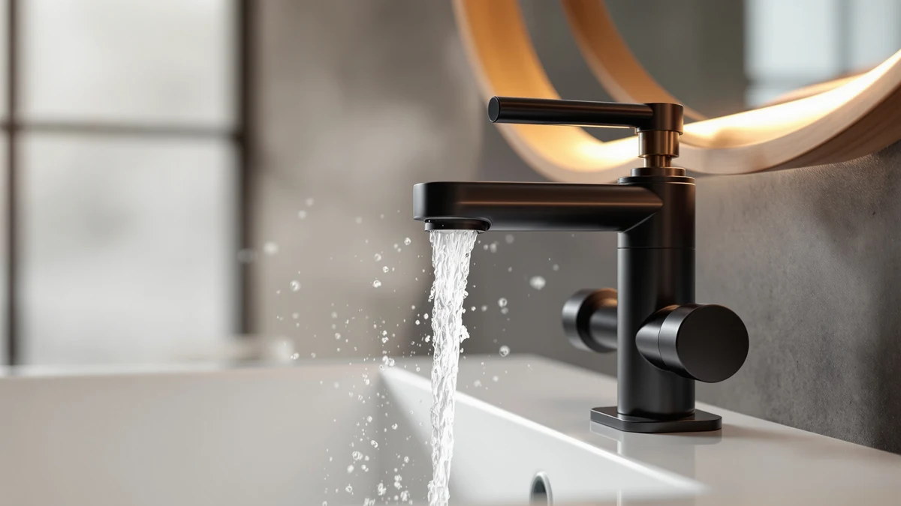

Best Bathroom Faucet With Filter of 2026: 7 Top Picks
Prices and picks verified as of August 2026. Independent, reader-supported reviews.


Quick Answer
The Delta Broadmoor Centerset Brushed Nickel is the best bathroom faucet with filter compatibility for most bathrooms in 2026. Its pull-down sprayer docks with a magnet, Delta rates the valve for 500,000 uses, and standard supply connections accept any under-sink inline filter. At $142.90 it costs more than the import picks below, and it earns the gap.
Our pick: Delta Broadmoor Centerset Brushed Nickel at $142.90 Check Price on Amazon
Bottom line: our top pick is the Delta Broadmoor Centerset Brushed Nickel Bathroom Faucet with at $142.90. The best budget option is the NOHALIPY Stainless Steel Brushed Nickel Bathroom Faucet with at $45.99.
Things to Know Before You Buy
- No built-in cartridges: Mainstream bathroom faucets do not ship with internal filters. You add filtration with an inline unit on the cold supply line under the sink, so build quality and standard connections matter more than marketing claims.
- Hole count: Match the faucet to your sink deck before you order. This guide covers single-hole, 4-inch centerset, and 8-inch widespread layouts, and none of them fits a deck it was not made for.
- Sprayer heads: All seven picks include a pull-down or pull-out sprayer, which speeds up rinsing the basin after you service the filter or clean the aerator.
- Finish vs water quality: If your tap water leaves mineral spots, a brushed nickel or SpotShield finish hides them far better than polished chrome. Readers dealing with hard water should weigh finish as heavily as price.
- Budget: These picks run from $45.99 to $142.90. The gap buys brand parts support and valve durability, and staying near the low end leaves room in the budget for the filter itself.
Shopping for the best bathroom faucet with filter capability leads to a discovery most listings gloss over: bathroom sink faucets almost never ship with a built-in filter cartridge. Filtration happens under the deck, where an inline filter threads onto the cold supply line of any faucet with standard connections. That changes what you are shopping for: the faucet above the filter. We compared seven models priced from $45.99 to $142.90 to find the one that deserves the spot. The Delta Broadmoor Centerset in brushed nickel, at $142.90, came out on top.
Filtered-water setups punish cheap hardware more than standard ones do. A faucet that drips wastes the water you paid to filter, and a flimsy valve fails faster when a household cycles it dozens of times a day. The Broadmoor answers both problems with a valve Delta rates for at least 500,000 uses and a pull-down sprayer that snaps back into its dock with a magnet instead of drooping over time.
Budget shoppers have real options here too. The NOHALIPY at $45.99 delivers a 24-inch pull-out hose and two spray modes for a third of the Broadmoor's price, and both Kablle picks land at $49.99. Below we explain how we chose, then walk through each pick, flaws included, so you can match a faucet to your sink deck and the filter you plan to run behind it.
Why You Should Trust Us
Ilane Tall covers bathroom fixtures for Best Bathroom Faucets, with a focus on hardware that survives daily use rather than products that photograph well and disappoint at the sink. For a bathroom faucet with filter plumbing behind it, that means favoring durable valves, standard supply connections, and brands that will still sell you a cartridge in five years.
We do not run a paid lab, and we do not quote invented experts. We compare listed specs, materials, and mounting formats. Then we read owner feedback for repeat complaints and weigh each faucet's price against what it delivers. When a pick has a weakness, such as thin parts support or a finish that shows wear, we say so in the write-up instead of burying it.
How We Picked
We started with the deck layouts American sinks use: single-hole, 4-inch centerset, and 8-inch widespread. Then we narrowed the field to faucets that pair well with under-sink filtration, which means standard supply connections and a valve built for heavy cycling. A sprayer that makes basin cleanup fast earned extra credit. Models with proprietary fittings or all-plastic bodies left the list first.
Price discipline shaped the rest. A bathroom faucet with filter hardware underneath it competes for the same budget as the filter, so we capped the list at $142.90 and made sure the field included choices near $50. We also kept finish variety in mind, with brushed nickel, matte black, and brushed gold all represented across the seven picks.
How We Compared
We benchmarked these seven faucets on paper and against owner experience rather than in a staged lab. For each model we compared the manufacturer's spec sheet on mounting format, dimensions, hose length, and valve rating, then cross-checked the listing for parts that matter to a filtered setup, such as supply connections and whether the drain hardware ships in the box.
Owner feedback filled the gaps that spec sheets leave. We looked for repeat complaints about leaks at the connections and sprayers that refuse to dock. Finishes that spot or wear early came up often too, and we weighed all of those reports against price. A $49.99 faucet earns more patience than a $142.90 one, and our verdicts reflect that.
Our Picks

Delta Broadmoor Centerset Brushed Nickel
What we like
- Valve rated for at least 500,000 uses
- Magnetic docking keeps the sprayer from drooping
- SpotShield finish resists water spots and fingerprints
Flaws but not dealbreakers
- Highest price in this guide at $142.90
- Fits only 3-hole, 4-inch centerset decks
| Material | Brass + finish |
| Size | — |
The Broadmoor is the faucet we would put above an under-sink filter and forget about. Delta rates the valve cartridge for at least 500,000 uses, which matters when a household cycles the handle dozens of times a day, and the pull-down sprayer uses MagnaTite docking, a magnet that snaps the wand back into place so it does not droop after a year of pulls. The SpotShield stainless finish resists the water spots that mineral-heavy tap water leaves behind, a welcome trait if a filter is on your shopping list in the first place.
Delta designed the install around five steps and publishes walkthrough videos, so a patient owner can fit it without a plumber, and the push-pop drain comes in the box. Two limits deserve mention. At $142.90 it costs about three times as much as the NOHALIPY below, and it fits only 3-hole, 4-inch centerset decks, so single-hole and widespread sinks need a different pick. If your deck matches, this is the best bathroom faucet with filter plumbing we found.

Delta Arvo Centerset Brushed Nickel
What we like
- Ceramic disc valve rated for at least 500,000 uses
- Same magnetic sprayer docking as our top pick
- SpotShield brushed nickel hides spots and prints
Flaws but not dealbreakers
- Still a three-figure faucet at $116.49
- Same 3-hole centerset limit as the Broadmoor
| Material | Brass + finish |
| Size | Pack of 1 |
The Arvo Centerset delivers most of what makes the Broadmoor our top pick and charges $116.49 for it. You get the same 4-inch centerset format, the same push-pop drain, a pull-down sprayer with MagnaTite magnetic docking, and a ceramic disc valve cartridge that Delta tests to at least 500,000 uses. The SpotShield brushed nickel finish shrugs off the fingerprints and dried droplets that make a sink look dirty two hours after you clean it.
The differences from the Broadmoor come down to styling. The Arvo wears an angular, contemporary profile while the Broadmoor reads traditional, and the $26.41 gap between them buys taste rather than function. The same caveat applies here: it fits 3-hole, 4-inch centerset decks only. For a filtered-water bathroom where the budget stops short of the Broadmoor, the Arvo gives up nothing that shows in daily use.

Kablle Bathroom Sink Faucet with
What we like
- Installs on 1-hole or 3-hole decks with the included deck plate
- Two spray modes on the pull-down head
- Stainless steel body and sprayer at $49.99
Flaws but not dealbreakers
- Parts support does not match Delta's
- Fit and finish trail the pricier picks
| Material | Brass + finish |
| Size | — |
The Kablle covers the buyers the Delta picks leave out. Its single-handle body installs on a 1-hole or 3-hole deck thanks to an included deck plate, so it fits sinks the centerset Deltas cannot touch, and the matte black finish gives a bathroom refresh a modern anchor for $49.99. The pull-down head offers two spray modes, stream and spray, which turns rinsing toothpaste off the basin walls into a ten-second job.
Kablle claims a 15-minute install with no plumber, and the 11.4-inch height gives the spout enough clearance for washing hands and filling cups without splash. The trade-offs sit where you would expect at this price. Kablle cannot match Delta's parts network, so a worn cartridge years from now means a new faucet, and the fit and finish trail the picks above. Paired with an inline filter, it still makes a filtered bathroom sink cheap to build.

Delta Arvo 1 Hole Matte
What we like
- Fits 1-hole or 3-hole decks with the included deck plate
- Ceramic valve rated for at least 500,000 uses
- Gasket-sealed deck plate blocks under-sink drips
Flaws but not dealbreakers
- Costs $123.42, more than the centerset Arvo
- Matte black commits you to a darker hardware palette
| Material | Brass + finish |
| Size | — |
This Arvo variant answers a different deck. It mounts in a single hole, an included gasket-sealed deck plate lets it cover 3-hole layouts too, and that seal helps keep splashes from sneaking under the sink where your filter and supply lines live. The pull-down sprayer and MagnaTite magnetic docking carry over from the centerset models, as does the ceramic disc valve that Delta tests to at least 500,000 uses.
At $123.42 it sits between the two centerset Deltas on price while offering the most flexible mounting of the three. Matte black makes a strong statement against a white basin, though it commits the rest of your hardware to darker tones. Owners of single-hole vanities who plan a filtered-water setup should start their shortlist here, because it brings Delta's valve and parts support to a format the rest of this list serves only at import-grade build.

NOHALIPY Stainless Steel Brushed Nickel
What we like
- 24-inch pull-out hose reaches beyond the basin
- Dual-function sprayer covers shaving, hair washing, and pet baths
- Lowest price in this guide at $45.99
Flaws but not dealbreakers
- Two-handle mixing is slower than a single lever
- No long-term parts support from this brand
| Material | Brass + finish |
| Size | — |
The NOHALIPY wins on reach. Its pull-out sprayer rides a 24-inch hose, the longest in this guide, which turns the faucet into a hand shower for rinsing hair or washing a dog, and it reaches basin corners a fixed spout cannot. The two-handle, 4-inch centerset body stands 11.22 inches tall with a 6.69-inch spout reach, and the hose rebounds on its own so you are not feeding it back by hand.
At $45.99 it undercuts our top pick by nearly $100, and the maker pitches it for utility sinks and RVs as much as for bathrooms, which tells you the design brief: function over polish. Two handles mean you dial in temperature more slowly than with a single lever, and NOHALIPY is not a brand you will find replacement cartridges for in a decade. As the working end of a low-cost filtered-water setup, though, it does more jobs than faucets at twice the price.

IUERASD Brushed Gold Bathroom Faucet
What we like
- Fits widespread decks drilled from 6 to 12 inches
- 360-degree swivel spout plus a pull-out sprayer
- Pop-up drain and supply hoses included at $55.99
Flaws but not dealbreakers
- Brushed gold clashes with chrome accessories
- Quick-connect hoses demand a firm click to avoid leaks
| Material | Brass + finish |
| Size | — |
The IUERASD is the only widespread pick in this guide, covering 3-hole decks drilled from 6 to 12 inches apart, a format most sprayer faucets skip. The spout swivels a full 360 degrees and pairs with a pull-out sprayer, so you can direct water anywhere in a large basin, and the box includes the pop-up drain and water supply hoses, which keeps the install to one order instead of three.
Brushed gold is the reason to pick it and the reason to pause. Against white porcelain it looks more expensive than its $55.99 price, but it commits the rest of your hardware to warm tones. The quick-connect hoses speed up installation, with one catch the maker flags itself: push each connector in until it clicks, or it can leak. Owners of widespread sinks who want a bathroom faucet with filter plumbing below the deck will not find many options this affordable.

Kablle Bathroom Faucet with Pull
What we like
- Two spray modes for full-basin cleanup
- Stainless steel body and sprayer head
- Pop-up drain included
Flaws but not dealbreakers
- Fit and finish trail the Delta centersets
- Repair means replacement at this price
| Material | Brass + finish |
| Size | — |
This second Kablle brings the pull-down sprayer to the classic two-handle, 4-inch centerset layout, the same deck format the Delta picks use, at about a third of their price. The sprayer head switches between two modes for rinsing the whole basin, the body and head are stainless steel, and the finish keeps dirt from bonding to the surface so a cloth wipe cleans it. A pop-up drain ships in the box.
Kablle also skipped the glued base of older budget designs, which makes the mounting sturdier than the price suggests. Set expectations to match the cost anyway. The handles and finish do not feel like the Deltas, and when a cartridge wears out you will replace the faucet rather than hunt for parts. For a rental bathroom or a first filtered-water setup, that math still works: you could replace this faucet twice and spend less than one Broadmoor.
Quick Comparison
| Product | Material | Price | Rating | Best for | Get it |
|---|---|---|---|---|---|
| Delta Broadmoor Centerset Brushed Nickel | Brass + finish | $142.90 | 4 | Most filtered-water bathrooms | View on Amazon → |
| Delta Arvo Centerset Brushed Nickel | Brass + finish | $116.49 | 4 | Delta quality for less | View on Amazon → |
| Kablle Bathroom Sink Faucet with | Brass + finish | $49.99 | 4 | Matte black on a budget | View on Amazon → |
| Delta Arvo 1 Hole Matte | Brass + finish | $123.42 | 4 | Single-hole vanities | View on Amazon → |
| NOHALIPY Stainless Steel Brushed Nickel | Brass + finish | $45.99 | 4 | Utility baths and RVs | View on Amazon → |
| IUERASD Brushed Gold Bathroom Faucet | Brass + finish | $55.99 | 4 | Widespread decks, warm tones | View on Amazon → |
| Kablle Bathroom Faucet with Pull | Brass + finish | $49.99 | 4 | Budget centerset decks | View on Amazon → |
Do bathroom faucets come with built-in water filters?
Almost none do.
Can I add a filter to any of the faucets in this guide?
Yes.
The Competition
We looked past dozens of listings to land on these seven. Faucets marketed with built-in filter spouts made the first cut and failed the second, because their cartridges are small, proprietary, and need replacement more often than an under-sink unit. Sub-$25 no-name faucets fell next, since plastic bodies and push-fit connections have no business sitting upstream of water you paid to filter.
Touchless faucets solve a hygiene problem rather than a water quality one, and their sensors and batteries add failure points to a setup that already includes a filter. Kitchen-style tall-arc faucets can mount on some bathroom decks, but they overwhelm shallow basins and splash. If your water problem starts at the source rather than the tap, our guides to faucets for well water and faucets for hard water attack it from that angle.
After weighing build, mounting coverage, and price across the field, the Delta Broadmoor remains the best bathroom faucet with filter plumbing behind it, and the Delta Arvo line covers the decks and budgets the Broadmoor does not.